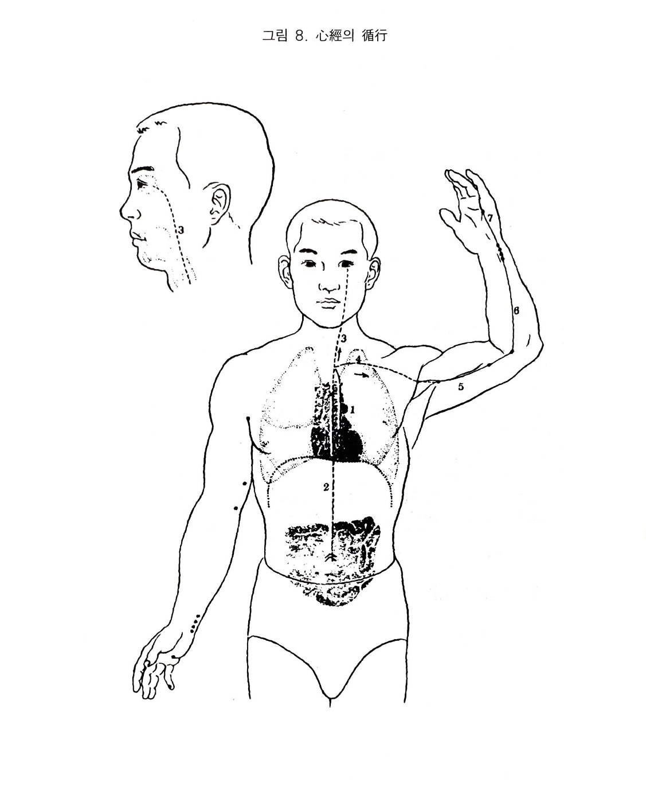

수소음심경
3. 수소음심경
1) 심장의 색체
심장은 수소음심경의 근원이며 그 경락을 관장하고, 소장과 표리관계가 되며, 오행으로 화성이며, 방위는 남방이고, 계절로 배당하면 여름으로 염열의 속성이 있다. 그 규는 설이며, 심장기는 설을 통해 외부로 반영된다.
위의 수곡지정이 영기가 되어 심에 이르면 적색혈이 되어 경맥으로 장부.경락.전신을 자양하므로 혈맥이 왕성하면 그 영화가 얼굴에 나타나나 쇠약해지면 얼굴이 희게 된다.
시진할 때 적색이 나타나면 체질적 또는 병에서 심.소장병에 걸리기 쉽거나 현재 발병한 것이다. 적색이 생생하게 윤이 나면 생색이나 검고 탁하면 병이 깊은 것이다. 체취.구취 또는 배설물에서 단내나 타는 냄새가 니고 음식에서는 고미를 좋아하나 고미가 지나치면 상심한다.
심의 본체가 화장이라 외기에서 열을 싫어하며 모든 화.열의 병은 심경으로 볼 수 있다. 심병에는 이상하게 웃는 증상이 있고, 기쁜 것이 지나치면 심병이 된다. 헛소리처럼 말을 하고 트림이 나며 한숨도 자주 쉰다. 건망.황홀.불안 등 정신 질환은 심병과 관계가 깊고 우울해 하기도 한다. 오래보면 정신이 소모되므로 상심.상혈한다. 혈행부족.혈액순환의 불순 등의 증상은 심경을 다스려야 한다.
2) 수소음심경의 순행
비경의 복애에서 중완의 밖을 지나 심장을 거쳐 하향하여 소장과 연결된다. 그 지락은 심계에서 나누어져 인후를 협하여 상행하여 눈에 이른다.
본경은 심계에서 폐장으로 이어지고 액와의 하면으로 비스듬히 나와 상완의 내측후변을 따라 소지측으로 내려가 소지의 조갑근부에 이른다.
3) 심경의 병증
(1) 호흡기계
심장은 본래 화장이므로, 실증에서는 실열하고 허하면 한하게 된다.
화는 기의 적이니 심실하면 소기한다.
위기가 심으로 상역하니 한숨을 쉰다.
(2) 소화기계
심기가 허한 즉 화생토를 못하니 소화되지 않으며 딸꾹질이 난다.
위기가 심으로 상역하니 트림이 난다.
수사가 심하면 비토가 억제하지 못하니 복대경종하며 소장은 심과 표리관계를 이루고 있어 소장이 대소변을 잘 분별하지 못하니 복대하다. 심의 대락이 눈에 이르니 습열이 넘쳐 목황되고 심적은 제 주위에 있다. 오장의 혈기가 적으니 진액고갈로 자주 목이 마르다.
(3) 순환기계
심병으로 신명을 손상하니 가슴이 답답하고 동계하며 지나치게 손상되면 졸도한다.
심경은 혈맥을 주관하니 허하면 혈맥쇠소한다.
제상을 눌러 보아 딴딴하고 뛰면 심병이다.
(4) 흉협복통류
심병이 심중에서 시작하여 흉중심포로 나와 횡격막을 통과하여 소장에 이러지고, 그 지락은 심계에서 폐직상한 후 다시 하향하여 흉협에서 액하로 해서 소지에 이르니 그 노선상에 흉.심.협통이 온다. 또한 횡격막에서 소장으로 내려가 결국 상.중.하 삼초를 다 돌아가니 흉복요협에서 통증이 온다.
(5) 운동기계
심은 화장이므로 한이 심하면 계종한다.
수족의 모든 관절은 신기가 출입하는 곳이고 혈맥이 통하고 있으니, 신기가 상하면 오그라져 펴지지 않거나 뻗치고 오그리지 못하거나 한다.
순종도 동체로 모두 경련을 일으키며 뻗치고 떠는 것이다.
경락은 액하. 상완. 전완의 내측으로 돌아 소지에 이르나 심포경이 수장에 이르므로 허열에 장중열하고 비 내측에 동통이 온다.
혈맥이 허하면 궐냉하고, 심기가 열하면 하반신이 궐냉해지면서 경완종하면 잘 걷지를 못한다.
(6) 안이비인후구계
심의 지락이 심계에서 인후를 끼고 상행하여 눈에 이르니 심열하면 목적하고, 특히 내자적하며 심정이 따라 올라가 넘쳐서 눈물이 난다.
혈은 심이 주관하므로 열을 받으면 상행하여 뉵혈.타혈이 발생한다.
설은 심의 축이며 실하면 설이 갈라지고 심하면 구설이 헌다.
경락이 인후를 도니 인건.인창한다.
심의 오성은 언이며 심기가 허약해지면 벙어리가 된다.
(7) 생식기계
부녀자의 경폐는 대개 과로와 경계.폭우.사려에서 원인이 되어 심기가 부족해지므로 혈액이 잘 순행되지 않아 발생하는데 혈을 다스릴 줄만 알고 심기를 통하게 하는 것을 몰라서는 안된다.
(8) 정신계
심은 군주의 관이며, 신명이 거하는 곳이다.
신명은 조용하면 편안하나 요동하면 번조한다.
심경에 사기가 들어오면 정신이 흐려지고 답답해지며 전간도 일으킨다.
심은 오지가 소희로서 심실하면 잘 웃고, 심허하면 슬퍼한다. 심허하면 건망.경계하고 대화하기를 싫어하거나 말을 틀리게 하거나 망령된 말을 한다. 심실하면 가슴이 갑갑해서 참지 못하고 두통이 오며, 심하면 광증이 나타난다.
(9) 기타
심허로 혈액쇠소하여 백해를 영양하지 못하니 소양하고 혈액이 사열에 손상되니 창통한다.
심주혈이므로 한은 심한이니, 실한 즉 한출하나 심하면 무한한다.
심의 정화는 면부에 나타나므로 실열에 면적한다.

오수혈
소충(정,목)
제5지조갑의 내측각진 곳에서 (손톱의 뿌리에 해당되는 구부러진 내측각)옆으로 1푼 떨어진 곳으로 옆으로 찌른다
소충은 심화경의 목혈이므로 심허증 즉 심장기능으 허약이나 정신적인 불안정, 초조, 소심, 과민, 흉통, 뒷목의 강직증등에 보하는 오행침법상의 선택점으로 이러할 때에는 소충(화경의 목혈)과 대돈(목경의 목혈)을 같이 보하는 방식을 쓰기도 한다. 일반적으로 정혈이므로 심장 급증의 요혈로서 심계항진이나 심장부의 통증인 협심증 등에도 쓰이고 침시술중 뇌빈혈을 일으켰을 때에도 머리를 낫게 하고 인중이 나 소택 소충을 놓으면 효과적이다.
기타 상기되었을 때 인후부의 담증이나 통증, 척골부의 통증이나 마비 증세에도 좋은 혈이다.
소부(형,화)
제4지와 제5지를 자연스럽게 구부려서 두 손가락 끝의 사이를 눌러보면 제4지중수골과 제5중수골의 양 뼈 사이의 가장 깊은 곳이 혈이다. 일반적으로 심장실질의 이상과 신경성인 심계항진, 히스테리, 노이로제 등에 쓰이나 이 혈은 화경중의 화혈이므로 심장의 이변을 위시해서 정신상의 제문제 즉, 한숨, 희소, 비애 등 여러가지 심적 비정상상태를 나타내고 신열이나 장중열에 해열작용이 있지만 허냉부위의 온기회복에도 작용하므로 본성이 허냉한 하초의 허냉에 유효하 것이다.
하초의 비뇨.생식기계는 신수의 독자적 운영권이 아니고 여타의 금.목.토기의 협동이 있어야 정상적 기능을 영위할 수 있는 것이다. 그러므로 음부의 악취, 소양감. 통증. 소변불리 등은 신수소속부분의 화기부족이기 때문에 화경의 화혈인 소부혈의 시침으로 치유되는 것이다.
신문(수,토,원)
손목 안쪽의 소지측으로 척골 끝과 수근골(손목에 있는 8개의 뼈)의 관절부 함중으로서 힘줄(척완골근)의 윗쪽(완골측)니 혈자리이다. 이곳은 맥이 뛰는 자리로서 소문에 의하면 삼부구후맥중 중부삼후부의 하나로서 이 곳의 맥동상태로서 심기를 헤아리는 곳이다. 심경의 원혈이라면 심경의 대표적인 성능이 발휘되는 곳이므로 심장실질으 일체질환, 정신상의 이상상태, 현대에 있어서의 신경성이라는 체질과 증후에 다 쓰이며 불면증, 어지러움, 상충성두통, 머리꼭대기인 백회혈 부근이 붓고 아프며 시력이 흐린 심신구허증에도 좋다.
또한 수토혈이기 때문에 소화장애(화생토를 못시키기 때문에) 특히 신경성 소화불량에 많이 쓰여지며 어린이의 경기, 야경증에도 좋은 혈이다. 부위적인 면으로는 소위 척골신경통에도 쓰이나 이것은 심. 소장경의 변화로 보는 것이 타당할 것이며 손목을 삐었을 때도 이곳이 염좌를 일으키는 곳이기도 하다.
영도(경,금)
손목 안쪽의 아래쪽을 누르면 척골과 수근골의 사이에 신문혈이 있다. 신문혈에서 팔꿈치 쪽으로 1촌5푼부위가 영도혈인데 그곳을 만져보면 척완골근이라는 힘줄이 있으니 그 힘줄으 윗쪽인 완골쪽에 혈을 잡을 것이나 타설도 있음을 참조하라. 화경의 금혈이기 때문에 심장병에 기침이나 숨찬 증세가 겹쳐있을 때 다시 말해서 심장이나 호흡기가 같이 나쁠 때 쓰임이 목혈의 오행성상이요, 이러한 연유 때문에 이 혈이 제반 심장병이나 히스테리, 소아경풍, 언어장해에 쓰인다. 기타 척골신경통이나 마비등에 적용되나 척골신경계통
즉 심. 소장경이 흐르는 부분의 이상은 척골신경통으로 처치하는 것보다 심. 소장경을 살펴 보사로 조절하는 쪽이 근본치료가 되며 치효도 높다고 보는 것이다.
소해(합,수)
손이 머리쪽으로 가도록 하여 팔꿈치를 구부리고 팔꿈치 아랫쪽에 있는 상완골내상과(뼈의 돌기)안쪽의 깊은 곳(내방5푼설도 있음)이 혈이 되나 팔을 반쯤 구부리면 주름살 끝 부분이 바로 내상과첨 내측이 된다. 화경의 수혈이므로 심장의 이상. 정신상의 변동. 상충(상기)으로 목덜미가 뻣뻣하거나 머리가 아프고 눈에 충혈이 되며 가슴이 답답하고 두정부(머리의 정수리)가 부어 있거나 화끈거리고 아프며 어지럽고 정신이 흐릴 때 그 원인인 신허를 바로 잡는데 쓰인다. 중국전래의 보사법으로는 소충. 대돈을 보하면 되나
사암도인방이나 칠십오난의 뜻을 응용한다면 음곡. 소해를 사하는 이중보사처치가 필요하게 된다. 기타 주관절통이나 척골신경통에도 쓰이고 척비통에도 하사자하면 크게 도움이 된다.